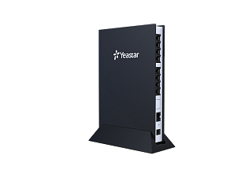

Yeastar TA800
769 BYN
Цена носит информационный характер — актуальную стоимость и наличие уточняйте у менеджера.
Шлюз Yeastar TA800 — это VoIP-шлюз на 8 портов FXS для подключения аналоговых телефонов. Yeastar TA800 отличается богатым функционалом и простотой конфигурирования, идеален для малых и средних предприятий, которые хотят объединить традиционную телефонную сеть компании с телефонной сетью на базе IP. Yeastar TA800 помогает сохранить предыдущие инвестиции и уменьшить затраты на коммуникации.
Гарантия 2 (два) года!
Характеристики
Возможности:- Русскоязычное голосовое меню
- Гибкие правила маршрутизации
- Поддержка факса T.38, Pass-through
- Тип набора: тональный
- Вызовы по IP-адресу (Peer to Peer)
- 3-х сторонняя конференция
- Прямой трансфер
- Сопроводительный трансфер
- Детализация вызовов (CDR)
- Переадресация: Нет ответа, Когда занят, Все вызовы
- Ожидание вызова
- Режим "Не беспокоить"
- Горячая линия
- Удержание вызова
- Отличительный рингтон
- MWI (Message Waiting Indicator)
- Быстрый набор
- Прямой набор по Caller ID
- Группа захвата
VoIP характеристики:
- Высококачественная передача голоса
- Поддержка кодеков G.711 (alaw/ulaw), G.722, G.723, G.726, G.729A/B, GSM, ADPCM
- Эхо компенсатор: ITU-T G.168 LEC
- Поддержка протоколов SIP 2.0 (RFC3261), IAX2
- Транспорт: UDP, TCP, TLS, SRTP*
- DTMF Mode: RFC2833, SIP INFO, In-band
- Динамичный джиттер буфер
- Поддержка QoS/ToS, 802.1 P/Q VLAN tagging
- Поддержка PLC
- Поддержка VAD при использовании G.729A/B и G.723
FXS подключение:
- Определение тона отбоя и переполюсовка
- Определение занятости линии
- Поддержка Caller ID: BELL202, ETSI (V23), NTT(V23-Japan), и CID на основе DTMF
- Определение частоты
- Определение сброса вызова
- Сигнализация: Kewl Start, Loop Start
- 3REN, до 1.5 км, используя кабель 24 AWG
Сетевые характеристики:
- Поддержка NAT, STUN
- 3 режима работы с сетью: DHCP/статический IP-адрес/PPPoE
- Протоколы доступа: FTP, TFTP, HTTP, HTTPS, SSH
- Поддержка VLAN, DHCP Клиент, DDNS, Статических маршрутов
Безопасность:
- Предупреждение о сетевой атаке
- Межсетевой экран
- Блокировка по IP
Управление:
- AMI интеграция
- Автоматическое обновление конфигурации и программного обеспечения через сервер Autoprovision (FTP/TFTP/HTTP)
- Создание резервной копии и возможность восстановления из бэкапа
- Встроенный механизм отладки (PCAP)
- Системные журналы
- Голосовое меню для базовой настройки
- Настройка через Web-интерфейс
- Поддержка Radius, TR-069
Физические характеристики:
- LAN: 1 (10/100Mbps)
- 8 портов FXS
- Размер: 200х137x25 мм
- Питание: AC100-240В ~ 50/60Гц, DC 12В 1 A макс.
- Рабочая температура: от 0°C до 40°C
- Температура хранения: -20°~65°
- Влажность: 10~90%
*Внимание! В продуктах, предназначенных для стран-участников Таможенного союза, данный функционал отсутствует.